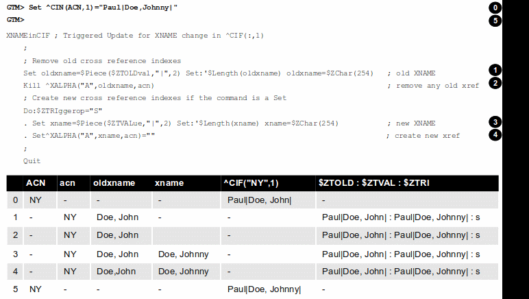

Triggers Technical Bulletin
Copyright © 2010 Fidelity Information Services, Inc. All Rights Reserved.
Permission is granted to copy, distribute and/or modify this document under the terms of the GNU Free Documentation License, Version 1.3 or any later version published by the Free Software Foundation; with no Invariant Sections, no Front-Cover Texts and no Back-Cover Texts.
GT.M™ is a trademark of Fidelity Information Services, Inc. Other trademarks are the property of their respective owners.
This document contains a description of GT.M and the operating instructions pertaining to the various functions that comprise the system. This document does not contain any commitment of FIS. FIS believes the information in this publication is accurate as of its publication date; such information is subject to change without notice. FIS is not responsible for any errors or defects.
|
Version
|
Date
|
Summary
|
|
1.1
|
July 13, 2010
|
Updated to reflect the trigger enhancements released with GT.M V5.4-001. Reworked the Overview and Trigger Definition File section. Added a new section called "Chained and Nested Triggers". Added V5.4-001 Triggers-related error messages. Miscellaneous cleanup of vocabulary and grammar. Improved content organization and presentation.
All significant changes are marked in "blue" color.
|
|
1.0
|
February 2, 2010
|
First published version.
|
Contact Information
|
GT.M Group
FIS
2 West Liberty Boulevard, Suite 300
Malvern, Pennsylvania 19355
United States of America
|
Switchboard: +1 (610) 296-8877
|
Table of Contents
Overview
Starting with V5.4-000, GT.M allows you to set up a trigger mechanism that automatically executes a defined action in response to a database update operation on a matching global node.
The trigger mechanism executes a fragment of M code (trigger code) "before" or "as part of" a database update. You can define the specifications of this mechanism in a file called a
Trigger Definition File.
For a trigger on KILL (and ZKILL), GT.M executes trigger code "before" the KILL operation. For example, a trigger on
KILL ^CIF(:,1) automatically might clear old cross references.
For a trigger on SET, GT.M executes trigger code "as part of" the SET operation. Within trigger logic, the ISV $ZTOLDVAL provides read access to the value of global node prior to the update and $ZTVALUE provides read/write access to the tentative SET value. This allows you to modify the tentative SET value before GT.M commits it to the database. The term "as part of" means that SET triggers execute intertwined with the SET operation. Although it is not yet committed the database, the tentative new value appears to the process as assigned but the process must SET $ZTVALUE to make any revision to the tentative value, because a SET of the global node would nest the trigger recursively - a pathological condition. GT.M executes SET triggers during a MERGE update where GT.M internally performs a series of SET operations and while performing a $INCREMENT() operation where GT.M internally performs a SET operation.
For all triggers, GT.M handles the database update event and the triggered actions as an Atomic (all or nothing) transactional unit. For more information, see "
Trigger Invocation and Execution Semantics".
Triggers can be used in a variety of situations including (but not limited to) the following:
-
Enforce schema-level consistency: Since database schema created in a normal M application are implicit, M applications implement logic to maintain and enforce conformance with an application schema. Using triggers to enforce schema-level consistency ensures all processes invoke the code uniformly, and increases code modularity and maintainability.
-
Allow an application to maintain one or more non-primary key indexes. For example, a trigger on updates to global nodes containing a customer id can maintain an index on the last name.
-
Implement business logic: For example, an update to an account could automatically trigger updates to related accounts.
-
Reducing replication traffic: Since the GT.M replication stream carries only the triggering updates, not the triggered updates, triggers reduce network traffic.
-
Automate application defined logging or journaling of updates or maintaining historical records. Triggers can be used to control these.
-
Implement referential integrity: For example, a trigger can prevent the posting of a bank transaction for an inactive account and display a rule violation message.
-
Debugging: Debugging an application with multiple concurrent accesses is hard. You can use triggers to establish "watch points" on global variable updates to trap incorrect accesses. For example, if an application is failing because certain global variable nodes either have incorrect values or when previously set values disappear. A trigger can be used to trap all such accesses.
-
Implement a dataflow based programming paradigm. Although not a primary goal of the implementation of triggers, you can use them to implement applications that use a dataflow programming paradigm.
Trigger Definition File
A trigger definition file is a text file used for adding new triggers, modifying existing triggers, or removing obsolete triggers. A trigger definition file consists of one or more trigger definitions. A trigger definition includes the following information:
-
Trigger signature: A trigger signature consists of:
-
Global Variable: The name of a specific global to which this trigger applies.
-
Subscripts: Subscripts for global variable nodes of the named global, specified using the same patterns as the ZWRITE command.
-
Value: For commands that SET or update the value at a node, GT.M honors an optional pattern to screen for changes to delimited parts of the value. A value pattern includes a piece separator and a list of pieces of interest.
-
Command: There are three commands: SET, KILL and ZKILL (ZWITHDRAW is identical to ZKILL; the shorter name for the command is used when specifying triggers. MERGE is logically treated as equivalent to a series of SET operations performed in a loop. GT.M handles $INCREMENT() of a global matching a SET trigger definition as a triggering update.
-
Trigger code: A string containing M code that GT.M executes when application code updates, including deletions by KILL and like commands, a global node with a matching trigger. The specified code can invoke additional routines and subroutines.
Note: Although the trigger code is a part of a trigger signature, GT.M uses a combination of global variable, subscripts, value, and command to find the matching trigger to invoke for a database update.
-
ACID property modifiers for triggered database updates: Currently, GT.M merely performs a syntax check on this part of a trigger definition. GT.M ensures the triggering database update, and any updates generated by trigger logic executed with transaction semantics. With the VIEW "NOISOLATION" command, GT.M transaction processing has long provided a mechanism for an application to inform the GT.M runtime system that it need not enforce Isolation. In such a case, the application and schema design provides Isolation by ensuring only one process ever updates nodes in a particular global at any given time, say by using $JOB as a subscript. This property anticipates a time when a trigger specification can provide NOISOLATION for particular nodes, in contrast to entire globals, and for every update to that node, in contrast to by process use of a VIEW command. Currently, the GT.M runtime system enforces Consistency for application logic inside a transaction and for triggered updates. This property anticipates a time when a trigger specification permits an application to inform the runtime system the application and schema design ensures appropriate Consistency for a trigger and its logic, thus relieving the GT.M runtime system from that task.
-
Trigger Name: You can optionally specify a trigger name that uniquely identifies each trigger. GT.M uses a trigger name for error reporting and configuration management of triggers - for example, a ZSHOW "S" reports the name of each trigger on the stack. If you do not specify a trigger name, GT.M automatically generates one using the global name as a base.
A user-specified trigger name is an alphanumeric string of up to 28 characters. It must start with an alphabetic character or a percent sign (%). For a trigger name, GT.M uses the same naming convention as an M name (or a routine name). In other contexts, GT.M truncates M names at 31 characters. However, GT.M treats a trigger name of over 28 characters as an error. This is because a trigger name uniquely identifies a trigger and truncation may cause duplication.
An automatically generated trigger name is a string comprised of two parts. Using the global name as a base, GT.M takes the first part as an alphanumeric string of up to 21 characters starting with an alphabetic character or a percent sign (%). The trailing part consists of an automatically incremented number in the form of #n where n is a whole number from 1 to 9999999 that uniquely identifies a trigger for the same update. For example, GT.M automatically generates trigger names Account#1, Account#2, and Account#3 for the first three triggers defined for global variable ^Account if no trigger names are specified in the trigger definition file. An attempt to use automatic assignment for more than a million triggers produces an error.
At run-time GT.M generates a trailing suffix of a hash-sign (#) followed by up to two characters to ensure that every trigger has a unique designation, even when the environment is complex. The run-time suffix applies to both user-specified and automatically generated trigger names. Typically, you can ignore this suffix.
Suppose you want to set up a trigger called TrigAcct on every s ^Acct("ID") to invoke the routine ^OpenAccount. Your trigger definition file may have an entry like +^Acct("ID") -command=S -xecute="do ^OpenAccount" -name=TrigAcct. The following diagram identifies the different parts of this trigger definition:
To apply this trigger definition file to GT.M, all you do is to load it using MUPIP TRIGGER -TRIGGERFILE or $ZTRIGGER(). GT.M would invoke trigger name TrigAcct on every Set operation on ^Acct("ID"). Internally, GT.M stores trigger TrigAcct in the same database file where ^Acct is stored.
The syntax of an entry in a trigger definition file is:
{-triggername|-triggername-prefix*|-*|{+|-}trigvn -commands=cmd[,...] -xecute=strlit1 [-[z]delim=expr][-pieces=[lvn=]int1[:int2][;...]] [-options={[no]i[solation]|[no]c[onsistencycheck]}...] [-name=strlit2]}
|
-triggername|-trigger-name-prefix*|-*
|
-triggername deletes a user-specified trigger name called triggername from the database.
-triggername* deletes all those user-defined triggers whose starting name match triggername.
-* deletes all triggers; if the MUPIP TRIGGER command does not specify -NOPROMPT , GT.M displays a warning and asks for user confirmation before deleting all triggers. If MUPIP TRIGGER command specifies -NOPROMPT and the definition file includes a -* line, GT.M deletes all the triggers without user confirmation. $ZTRIGGER() performs deletions -NOPROMPT.
+triggername issues an error; to add a new user-specified trigger name, use -name=strlit2.
|
|
{+|-}trigvn
|
trigvn is a global node on which you set up a trigger.
-trigvn deletes any triggers in the database that match the specified trigger.
+trigvn adds or replaces the specified trigger. If the specified trigger exists (with a matching specification), MUPIP TRIGGER or $ZTRIGGER() treats the matching definition as a no-op, resulting in no database update. If you want to specify more than one global node for the same trigger code, the following rules apply:
-
You can use patterns and ranges for subscripts.
-
You can specify a semicolon (;) separated list for subscripts.
-
You can specify a selection list that includes a mix of points, ranges and patterns, but a pattern cannot serve as either end of a range. For example, :,"a":"d";?1U is a valid specification but :,"a":?1A is not.
-
You can specify a local variable name for each subscript. For example instead of ^X(1,:,:), you can specify ^X(1,lastname=:,firstname=:). This causes GT.M to define local variables lastname and firstname to the actual second and third level subscripts respectively from the global node invoking this trigger. The trigger code can then use these variables just like any other M local variable. As described in the Trigger Execution Environment section, trigger code executes in a clean environment - as if all code is preceded by an implicit NEW – the implicit assignments apply only within the scope of the trigger code and don't conflict or affect any run-time code or other triggers.
-
You cannot use the @ operator, unspecified subscripts (for example, ^A() or ^A(:,)) or local or global variable names as subscripts.
-
You cannot use patterns and ranges for the global variable name. Therefore, you cannot set a trigger for ^Acct*.
In order to account for any non-standard collation, GT.M evaluates string subscript ranges using the global specific collation when an application update first invokes a trigger - as a consequence, it detects and reports range issues at run-time rather than from MUPIP TRIGGER or $ZTRIGGER(), so test appropriately. For example, GT.M reports a run-time error for an inverted subscript range such as (ASCII) C:A.
|
|
-command=cmd
|
cmd is the trigger invocation command. Currently, you can specify one or more of S[et], K[ill] or ZK[ill]. A subsequent GT.M release may support ZTK[ill] for triggering on descendent nodes of a KILLed ancestor, but, while current versions accept ZTK, they convert it into K. If cmd specifies multiple command values, GT.M treats each M command as a separate trigger. Note that even if you specify both SET and KILL, only one M command matches at any given time. Trigger code is not executed in the following conditions:
-
A KILL of a node that does not exist.
-
A KILL of a node that has a cmd=ZK trigger, but no cmd=K trigger.
-
A ZKILL or ZWITHDRAW of a node that has descendents but no data and a trigger with cmd=ZK.
-
The trigger uses the "piece" syntax (described below) and no triggering piece changes in the update.
-
The duplicate SET optimization is enabled (that is, the environment variable gtm_gvdupsetnoop is set to 1|True|Yes) and a SET command causes no change in the value of a preexisting node.
|
|
-xecute="strlit1"
|
strlit1 specifies the trigger code executed when an update matches the trigvn. Note that strlit1 is a quoted string literal and quotes inside strlit1 are doubled as in normal M syntax.
To validate strlit1, MUPIP TRIGGER or $ZTRIGGER() compiles it before applying the trigger definition to the database and issues a TRGCOMPFAIL error if it contains any invalid code.
Note: Trigger compilation detects compilation errors, but not run-time errors. Therefore, you should always test your trigger code before applying trigger definitions to the database
Warning: As stated in the Trigger Definition File section, the text of trigger code is a part of the trigger signature. If you use two trigger signatures that have the same semantics (global variable, subscript, value, and command) but different text (for example: set foo=$ztoldval, s foo=$ztoldval, and set foo=$ztol), their signatures become different and GT.M treats them as different triggers. FIS recommends you to use comprehensive and strong coding conventions for trigger code or rely on user-specified names in managing the deletion and replacement of triggers.
|
|
[-pieces=int1[:int2][;...]]
|
If cmd is S[et], you can specify an optional piece list sequence where int2>int1 and int1:int2 denotes a integer range from int1 to int2. The trigger gets executed only when any piece from the specified piece list changes. Suppose your trigvn has a list "Window|Chair|Table|Door" and you want to execute the trigger only when the value of the 3rd or 4th piece changes so you might specify the following trigger definition:
+^trigvn -commands=S -pieces=3;4 -delim="|" -options=NOI,NOC -xecute="W ""3rd or 4th element updated."""
GTM>W ^trigvn
Window|Chair|Table|Door|
GTM>s $P(^trigvn,"|",3)="Dining Table"
3rd or 4th element updated.
This trigger is not executed if you change the first element. For example:
S $P(^trigvn,"|",1)="Chandelier"
does not invoke the trigger.
You can also specify a range for your piece sequence. For example, 3:5;7;9:11 specifies a trigger on pieces 3 through 5,7 and 9 through 11. GT.M merges any overlapping values or ranges - for example, 3:6;7 is the same as 3:7.
|
|
[-[z]delim=expr]
|
If cmd is S[et], you can specify an optional piece delimiter using -[z]delim=expr where expr is a string literal or an expression (with very limited syntax) evaluating to a string separating the pieces (e.g., "|") in the values of nodes, and is interpreted as an ASCII or UTF-8 string based on the $gtm_chset environment variable. To allow for unprintable delimiters in the delimiter expression, MUPIP TRIGGER only accepts $Char() and $ZChar() and string concatenation (_) as embellishments to the string literals. If zdelim specifies a delimiter, GT.M uses the equivalent of $ZPiece() to match pieces and to identify changes in $ZTUPDATE() (refer to the ISV description for additional information); otherwise, if delim specifies a delimiter, GT.M uses the equivalent of $Piece() for the current mode (M or UTF-8). Specifying a delimiter for cmd other than S[et] or specifying both delim and zdelim for the same trigger each produce an error.
|
|
[-options={no]i[solation]|[[no]c[onsistencycheck]}...
|
You can specify [NO] ISOLATION or [NO]CONSISTENCYCHECK as a property of the triggered database updates. NOISOLATION is a facility for your application to instruct GT.M where the application logic and database schema take responsibility for ensuring the ACID property of ISOLATION, and that any apparent collisions are purely coincidental from multiple global nodes resident in the same physical block which serves as the GT.M level of granularity in conflict checking. In the current release this trigger designation is notational only - you must still implement NOISOLATION at the process level with the VIEW command, but you can use the trigger designation in planning to move to schema-based control of this facility. NOCONSISTENCYCHECK is a facility for your application to instruct GT.M that application logic and schema take responsibility for ensuring the ACID property of CONSISTENCY. The [NO]CONSISTENCYCHECK feature is not yet implemented and will be made available in a future GT.M release. For now, you can plan to move CONSISTENCY responsibility from your application to a trigger and implement it later when this feature becomes available.
Note: -options are not part of the trigger signature and so can be modified without deleting an existing trigger.
|
|
[-name=strlit2]
|
strlit2 is a user-specified trigger name. It is an alphanumeric string of up to 28 characters. It must start with an alphabetic character or a percent sign (%).
Note: -name is not part of the trigger signature and so can be modified without deleting an existing trigger.
Note also that the name can be used to delete a trigger - this alternative avoids potential issues with text variations in the code associated with the -xecute qualifier which is part of the trigger signature when the variations don't have semantic significance.
|
Trigger ISVs
The following table briefly describes all ISVs (Intrinsic Special Variables) available for use by application logic using triggers. With the exception of $ZWORMHOLE they return zero (0) if they have numeric values or an empty string when referenced by code outside of a trigger context. For more comprehensive description and usage examples of these ISVs, see "
Trigger ISVs".
$ZTCODE
|
Contains the M code (Xecute) string corresponding to the current trigger.
|
$ZTDATA
|
A fast path alternative to $Data(@$REFERENCE)#2 for a SET or $Data(@$REFERENCE) of the node for a KILL update.
|
$ZTLEVEL
|
Returns the current level of trigger nesting (invocation by an update in trigger code of an additional trigger).
|
$ZTOLDVAL
|
Returns the prior (old) value of the node whose update caused the trigger invocation or an empty string if node had no value; refer to $ZTDATA to determine if the node had a data value.
|
$ZTRIGGEROP
|
For SET (including MERGE and $INCREMENT() operations), $ZTRIGGEROP returns the value "S". For KILL, $ZTRIGGEROP returns the value "K". For ZKILL or ZWITHDRAW, $ZTRIGGEROP returns the value "ZK".
|
$ZTSLATE
|
$ZTSLATE allows you to specify a string that you want to make available in chained or nested triggers invoked for an outermost transaction (when a TSTART takes $TLEVEL from 0 to 1).
|
$ZTVALUE
|
For SET, $ZTVALUE has the value assigned to the node which triggered the update. Initially this is the value specified by the explicit (triggering) SET operation. Modifying $ZTVALUE within a trigger modifies the value GT.M eventually assigns to the node.
|
$ZTUPDATE
|
For SET commands where the GT.M trigger specifies a piece separator, $ZTUPDATE provides a comma separated list of ordinal piece numbers of pieces that differ between the current values of $ZTOLDVAL and $ZTVALUE.
|
$ZTWORMHOLE
|
$ZTWORMHOLE allows you to specify a string up to 128KB that you want to make available during trigger execution. You can use $ZTWORMHOLE to supply application context or process context to your trigger logic. Because $ZTWORMHOLE is retained throughout the duration of the process, you can read/write $ZTWORMHOLE both from inside and outside a trigger. Note that if trigger code does not reference $ZTWORMHOLE, GT.M does not make it available to MUPIP (via the journal files or replication stream). Therefore, if a replicating secondary has different trigger code than the initiating primary (an unusual configuration) and the triggers on the replicating node require information from $ZTWORMHOLE, the triggers on the initiating node must reference $ZTWORMHOLE to ensure GT.M maintains the data it contains for use by the update process on the replicating node. GT.M allows you to change $ZTWORMHOLE within trigger code so that a triggered update can trigger other updates but because of the arbitrary ordering of triggers matching the same node (refer to the discussion on trigger chaining below), such an approach requires careful design and implementation.
|
The
Trigger Execution Environment section describes the interactions of the following ISVs with triggers: $ETRAP, $REFERENCE, $TEST, $TLEVEL, and $ZTRAP.
Chained and Nested Triggers
Triggers are chained or nested when a database update sets off more than one trigger. A nested trigger is a trigger set off by another trigger. GT.M assigns a nesting level to each nested trigger to up to 127 levels. While nested triggers are always Atomic with their triggering update GT.M gives each nested trigger a new trigger context rather than a part of the triggering update.
A chained trigger is an arbitrary sequence of matching triggers for the same database update.
Consider the following trigger definition entries:
+^Acct("ID") -commands=Set -xecute="Set ^Acct(1)=$ZTVALUE+1"
+^Acct(sub=:) -command=Set -xecute="Set ^X($ZTVALUE)=sub"
This example sets off a chained sequence of two triggers and one nested trigger. On Set ^Acct("ID")=10, GT.M chains together an arbitrary sequence of triggers for ^Acct("ID") and ^Acct(sub:). It is possible for either the ^Acct(sub=:) trigger or the ^Acct("ID") trigger to execute first and the other to follow because the trigger execution sequence is arbitrary. Whenever GT.M invokes the trigger for ^Acct("ID"), the Set ^Acct(1)=$ZTVALUE+1 code sets off the trigger for ^Acct(sub=:) as a nested trigger.
Caution: FIS recommends against using chained and nested triggers that potentially update the same piece of a global variable. You should always assess the significance of having chained triggers for a database update especially because of the arbitrary trigger execution order.
The following table shows the stacking behavior of some Intrinsic Special Variables in chained and nested triggers.
|
ISV Stacking
|
Chained
|
Nested
|
|
$REFERENCE
|
Shared
|
Stacked
|
|
$TEST
|
Stacked
|
Stacked
|
|
$ZTVALUE
|
Shared (updatable)
|
Stacked
|
|
$ZTOLDVAL
|
Shared
|
Stacked
|
|
$ZTDATA
|
Shared
|
Stacked
|
$ZTSLATE
|
Not Stacked
|
Not Stacked
|
|
$ZTTRIGGEROP
|
Shared
|
Stacked
|
|
$ZTWORMHOLE
|
Not Stacked
|
Not Stacked
|
|
$ZTLEVEL
|
Shared
|
Stacked
|
|
$ZTUPDATE
|
depends on $ZTVALUE when trigger starts
|
Stacked
|
Stacked denotes an ISV whose value is restored at the completion of the trigger.
Not Stacked denotes an ISV whole value is retained after the completion of the trigger.
Shared denotes an ISV whose value is the same, possibly subject to updates, across chained updates
Note that a trigger that is both nested and chained has the characteristics from both columns - the "Chained" column is really about the relationship between triggers invoked by the same update and the "Nested" is really about the isolation of a trigger from the context that invoked it, whether or not that context is inside the context of another trigger.
A Simple Example
This section contains a simple example showing how a GT.M trigger can automatically maintain cross references in response to a SET or KILL operation on ^CIF(ACN,1). It also reinforces the basic trigger concepts explained above.
Global nodes in ^CIF(ACN,1) have a structure ^CIF(ACN,1)=NAM|XNAME| where the vertical-bars are delimiters and XNAME is a customer's canonical name (e.g., "Doe, Johnny"). The application schema has one cross reference index, ^XALPHA("A",XNAME,ACN)="" . A GT.M trigger specified for ^CIF(:,1) nodes can automatically maintain the cross references.
-
Using your editor, create a trigger definition file called triggers.trg1with the following entry:
+^CIF(acn=:,1) -delim="|" -pieces=2 -commands=SET,KILL -xecute="Do ^XNAMEinCIF"
In this definition:
^CIF - specifies the global variable to which the trigger applies.
acn=: - in ZWRITE syntax, ":" specifies any value for the first subscript, and the acn= prefix requests GT.M assign the value of the first subscript (ACN) to the local variable acn before invoking the trigger logic.
1 - specifies that the trigger matches only if the second subscript is 1 (one).
-delim="|" - specifies that GT.M use "|" as the piece separator when checking the value of the node to see whether to invoke the trigger. Use of the keyword delim tells GT.M to use $PIECE() semantics for the value at the node; zdelim, instead, would instruct GT.M to use $ZPIECE() semantics.
-pieces=2 - specifies that GT.M should only invoke the trigger when the update changes the second piece (XNAME) not for a change to the first piece (NAM), or any other piece without a change to XNAME.
-commands=SET,KILL - specifies that GT.M invoke the trigger for SET and KILL updates (but not a ZKILL/ZWITHDRAW command).
-xecute="Do ^XNAMEinCIF" - provides code for GT.M to invoke to perform the trigger logic.
-
Execute a command like the following:
$ mupip trigger -triggerfile=triggers.trg
This command adds a trigger for ^CIF(:,1).
On successful trigger load, this command displays an output like the following:
File triggers.trg, Line 1: ^CIF trigger added with index 1
=========================================
1 triggers added
0 triggers deleted
0 trigger file entries not changed
0 triggers modified
=========================================
Now, every S[et] and K[ill] operation on the global node ^CIF(:,1) executes the routine XNAMEinCIF.
-
Using your editor, create an M routine called XNAMEinCIF.m with the following code:
XNAMEinCIF ; Triggered Update for XNAME change in ^CIF(:,1)
Set oldxname=$Piece($ZTOLDval,"|",2) Set:'$Length(oldxname) oldxname=$ZChar(254) ; old XNAME
Kill ^XALPHA("A",oldxname,acn) ; remove any old xref
; Create a new cross reference if the command is a Set
Do:$ZTRIggerop="S"
. Set xname=$Piece($ZTVALue,"|",2) Set:'$Length(xname) xname=$ZChar(254) ; new XNAME
. Set^XALPHA("A",xname,acn)="" ; create new xref
;
When the XNAME piece of a ^CIF(:,1) node is SET to a new value or KILLed, we delete the existing cross references. The deletion can be unconditional, because if the node did not previously exist, then the KILL is a no-op. If the command is a SET, we create new cross references. From the definition of the schema, the code uses the following values:
-
acn - GT.M sets variable acn to the value of the first subscript of the ^CIF() node matching the trigger specification.
-
the code sets the variable oldxname to the prior value of the node, from the ISV $ZTOLDVAL and if that is null (has zero length), substitutes the byte $ZCHAR(254).
-
the code SETs the variable xname to the new value of the node, from the ISV $ZTVALUE or to $ZCHAR(254) if that is null.
After obtaining the values, an unconditional KILL command deletes the previous cross reference index, if it exists. Then, only if a SET invoked the trigger (determined from the ISV $ZTRIGGEROP), the trigger invoked routine creates a new cross reference index node. Note that because GT.M implicitly creates a new context for the trigger logic we do not have to worry about out choice of names or explicitly NEW any variables.
The following illustration shows the flow of control when the trigger is executed for Set ^CIN(ACN,1)="Paul|John, Doe, Johnny|". The initial value of ^CIN(ACN,1) is "Paul|Doe, John|" and ACN is set to "NY".

Important: Within trigger context (Step 1 through 4) , if you modify the value of $ZTVAL, GT.M commits it to the database at Step 5. GT.M executes all steps (0 through 5) as an Atomic (all or nothing) transactional unit.
The following illustration shows the flow of control when the trigger is executed for Kill ^CIN(ACN,1).
Trigger Definition Storage
GT.M stores trigger definitions as nodes of a global-like structure (^#t) within the same database as the nodes with which they're associated. You can manage the trigger definitions with MUPIP TRIGGER and $ZTRIGGER() but you cannot directly access ^#t (except with DSE, which FIS recommends against under normal circumstances). The block size, key size, and record size for a database must be sufficient to hold its associated trigger definition. In addition, GT.M stores cross-region name resolution information in the DEFAULT region, so the DEFAULT region in a global directory used to update triggers must have sufficient block size, key size, and record size to hold that trigger-related data.
Trigger Invocation and Execution Semantics
GT.M stores Triggers for each global variable in the database file for that global variable. When a global directory maps a global variable to its database file, it also maps triggers for that global variable to the same database file. When an extended reference uses a different global directory to map a global variable to a database file, that global directory also maps triggers for that global variable to that same database file.
Although triggers for Set and Kill / ZKill commands can be specified together, the command invoking a trigger is always unique. The ISV $ZTRIggerop provides the trigger code which matched the triggering command.
Whenever a command updates a global variable, the GT.M runtime system first determines whether there are any triggers for that global variable. If there are any triggers, it scans the signatures for subscripts and node values to identify matching triggers. If multiple triggers match, GT.M invokes them in an arbitrary order. Since a future version of GT.M, potentially multi-threaded, may well choose to execute multiple triggers in parallel, you should ensure that when a node has multiple triggers, they are coded so that correct application behavior does not rely on the order in which they execute.
When a process executes a Kill, Zkill or Set command, the target is the global variable node specified by the command argument for modification. With Set and ZKill, the target is a single node. In the case of Kill, the target may represent an entire sub-tree of nodes. GT.M only matches the trigger against the target node, and only invokes the trigger once for each Kill command. GT.M does not check nodes in sub-trees to see whether they have matching triggers.
Kill / ZKill
If Kill or ZKill updates a global node matching a trigger definition, GT.M executes the trigger code when a database state change has been computed but before it has been applied in the process space or the database. This means that the node to be KILLed and descendants (if any) remain visible to the trigger code. Note that a KILL trigger ignores $ZTVALUE.
Set
If a SET updates a global node matching a trigger definition, GT.M executes the trigger code
after the node has been updated in the process address space, but before it is applied to the database.
When the trigger execution completes, the trigger logic commits the value of a node from the process address space only if $ZTVALUE is not set. if $ZTVALUE is set during trigger execution, the trigger logic commits the value of a node from the value of $ZTVALUE.
Consider the following example:
GTM>set c=$ztrigger("S")
;trigger name: A#1# cycle: 1
+^A -commands=S -xecute="set ^B=200"
;trigger name: B#1# cycle: 1
+^B -commands=S -xecute="set $ztval=$ztval+1 "
GTM>set ^A=100,^B=100
GTM>write ^A
100
GTM>write ^B
201
SET ^A=100 invokes trigger A#1. When the trigger execution begins, GT.M sets ^A to 100 in the process address space, but does not apply it to the database. Therefore, the trigger logic sees ^A as set to 100. Other process accessing the database, however, see the prior value of ^A.
When the trigger execution completes, the trigger logic commits the value of a node from the process address space only if $ZTVALUE is not set. The trigger logic commits the value of a node from the $ZTVALUE only if $ZTVALUE is set during trigger execution.
Because $ZTVALUE is not set in A#1, GT.M commits the value of ^A from the process address space to the database. Therefore, GT.M commits ^A=100 to the database.
SET ^B=200 invokes trigger B#2. $ZTVALUE is set during trigger execution, therefore GT.M commits the value of $ZTVALUE to ^B at the end of trigger execution.
Note: Within trigger code, any SET operation on ^B recursively invokes trigger B#1. Therefore, always set $ZTVALUE to change the value node during trigger execution.
GT.M executes the triggering update and all associated triggers within the same transaction, whether or not the original command is inside a transaction. This means that although the trigger logic sees the updated value of the node, it is not visible to other processes until the outermost transaction commits to the database.
A trigger may need to update the node whose SET initiated the trigger. Situations where this may occur include:
-
a log or journal entry may need to be stored in a different piece of the same node as the update, or
-
the node being updated may need its data to be stored in a canonical form (such as all-caps, or with standardized punctuation, regardless of how it was actually entered), or have its value limited to a range.
In such cases, the trigger logic should make the changes to the ISV $ZTVALUE instead of the global node. At the end of the trigger invocation, GT.M applies the value in $ZTVALUE to the node. Before the first matching trigger executes, GT.M sets $ZTVALUE. Since a command inside one trigger's logic can invoke another nested trigger, if already in a trigger, GT.M stacks the value of $ZTVALUE for the prior update before modifying it for the nested trigger initiation.
GT.M treats a MERGE command as a series of SET commands performed in collation order of the data source. GT.M checks each global node updated by the MERGE for matching triggers. If GT.M finds one or more matches, it invokes all the matching trigger(s) before the next command or the next set argument to the same SET command.
GT.M treats the $INCREMENT() function as a SET command. Since the result of a $INCREMENT() operation must be numeric, if the trigger code modifies $ZTVALUE, at the end of the trigger, GT.M applies the value of +$ZTVALUE (that is, $ZTVALUE coerced to a number) to the target node.
Trigger Execution Environment
As noted above, if there are multiple matching triggers, the GT.M process makes a list of matching triggers and executes them in an arbitrary order with no guarantee of predictability.
For each matching trigger:
-
The GT.M process implicitly stacks the naked reference, $REFERENCE, $TEST, $ZTOLDVAL, $ZTDATA, $ZTRIGGEROP, $ZTUPDATE and NEWs all local variables. At the beginning of trigger code execution,
-
GT.M executes the trigger code. Note that in the course of executing this GT.M trigger, if the same trigger matches again for the same or a different target, GT.M reinvokes the trigger recursively. In other words, the same trigger can be invoked more than once for the same command. Note that such a recursive invocation is probably a pathological condition that will eventually cause a STACKCRIT error. Triggers may nest up to 127 levels, after which an additional attempt to nest produces a MAXTRGRNEST error.
-
When the code completes, GT.M clears local variables, restores what was stacked, except $ZTVALUE (refer to the ISV definitions for comments on modifying $ZTVALUE) to the values they had at the start of the trigger, and if there is any remaining trigger matching the original update, adjusts $ZTUPDATE and executes that next action. $ZTVALUE always holds the current target value for the node for which the application update initially invoked the trigger(s). Note that because multiple triggers for the same node execute in an arbitrary order, having more than one trigger change $ZTVALUE requires careful design and implementation.
After executing all triggers, GT.M commits the operation initiating the trigger as well as the trigger updates and continues execution with the next command (or, in the case of multiple nodes being updated by the same command, with the next node). Note that if the operation initiating the trigger is itself within a transaction, other processes will not see the database state changes till the TCOMMIT of the outermost transaction.
To ensure trigger actions are Atomic with respect to the update that invokes them, GT.M always executes trigger logic and the triggering update within a transaction. If the triggering update is not within an application transaction, GT.M implicitly starts a restartable "Batch" transaction to wrap the original update and any triggers generated by the update. In other words, when 0=$TLEVEL GT.M behaves as if implicit TStart *:Transactionid="BATCH" and TCommit commands bracket the upddate and its triggers. Therefore, the trigger code and/or its error trap always operate inside a Transaction and can use the TRESTART command even if the main application code never uses TSTART. $ETRAP code for use in triggers may include TROLLBACK logic.
The deprecated ZTSTART/ZTCOMMIT transactions are not compatible with triggers. If a ZTSTART transaction is already active when an update to a global that has any trigger defined occurs, GT.M issues a runtime error. Likewise GT.M treats any attempt to issue a ZTSTART within a trigger context as an error.
Error Handling during Trigger Execution
GT.M uses the $ETRAP mechanism to handle errors during trigger execution. If an error occurs during a trigger, GT.M executes the M code in $ETRAP. If $ETRAP does not clear $ECODE, GT.M does not commit the database updates within the trigger and passes control to the environment of the trigger update. If the $ETRAP action or the logic it invokes clears $ECODE, GT.M can continue processing the trigger logic.
Consider the following trivial example:
^Acct(id=:,disc=:) –commands=Set –xecute="Set msg=""Trigger Failed"",$ETrap=""If $Increment(^count) Write msg,!"" Set $ZTVAlue=x/disc"
During trigger execution if disc (the second subscript of the triggering update) evaluates to zero, resulting in a DIVZERO (Attempt to divide by zero) error, GT.M displays the message "Trigger Failed". Since the $ETRAP does not clear $ECODE, after printing the message, GT.M leaves the trigger context and invokes the error handler outside the trigger, if any. In a DIVZERO case, the process neither assigns a new value to ^Acct(id,disc) nor commits the incremented value of ^count to the database.
An application process can use a broad range of corrective actions to handle run-time errors within triggers. However, these corrective actions may not be available during MUPIP replication. As described in the Trigger Environment section, GT.M replicates only the trigger definitions, but not the triggered updates, which are executed by triggers when a replicating instance replays them. If a trigger is invoked in a replicating instance, it means that trigger was successfully invoked on the originating instance. For normal application requirements, you should ensure that the trigger produces the same results on a correctly configured replicating instance. Therefore your $ETRAP code on MUPIP should deal with the following cases where:
-
The run-time $ETRAP code modified the trigger logic to achieve the desired result
-
The replicating configuration is different from the initiating configuration
-
The filters between the initiating and replicating instance introduce an error
In the later two cases there are probably basically two possibilities for the mismatch environments - they are:
-
Intended and the $ETRAP mechanism is an integral part of managing the difference
-
Unintended and the $ETRAP mechanism should help notify the operational team to correct the difference and restart replication
The trigger facility introduces an environment variable called gtm_trigger_etrap. It provides the initial value for $ETRAP in trigger context and can be used to set error traps for trigger operations in both mumps and MUPIP processes. The code can, of course, also SET $ETRAP within the trigger context. During a run-time trigger operation if you do not specify the value of gtm_trigger_etrap and a trigger fails, GT.M uses the current trap handler. In a mumps process, if the trap handler was $ZTRAP at the time of the triggering update and gtm_trigger_etrap isn't defined, the error trap is implicitly replaced by $ETRAP="" which exits out of both the trigger logic and the triggering action before the $ZTRAP unstacks and takes effect. In a MUPIP process, if you do not specify the value of gtm_trigger_etrap and a trigger fails, GT.M implicitly performs a SET $ETRAP="If $ZJOBEXAM()" and terminates the MUPIP process. $ZOBEXAM() records diagnostic information (equivalent to ZSHOW "*") to a file that provides a basis for analysis of the failure.
Important: $ZJOBEXAM() dumps the context of a process at the time the function executes and the output may well contain sensitive information such as identification numbers, credit card numbers, and so on. You should secure the location of files produced by the MUPIP error handler or set up appropriate security characteristics for operating MUPIP. Alternatively, if you do not want MUPIP to create a $ZJOBEXAM() file, explicitly set the gtm_trigger_etrap environment variable to a handler such as "Write !,$ZSTATUS,!,$ZPOSITION,! Halt".
Other key aspects of error handling during trigger execution are as follows:
-
Any attempt to use the $ZTRAP error handling mechanism for triggers results in a NOZTRAPINTRIGR error.
-
If the trigger initiating update occurs outside any transaction ($TLEVEL=0), GT.M implicitly starts a transaction to wrap the initiating update and the triggered updates. Consequently if a TROLLBACK or TCOMMIT within the trigger context causes the code to come back to complete the initiating update with a different $TLEVEL than when the trigger started (including any implicit TSTART), GT.M issues a TRIGTLVLZERO error and does not commit the original update.
-
Any TCOMMIT that takes $TLEVEL below what it was when at trigger initiation, causes a TRIGTLVLCHNG error. This behavior applies to any trigger, whether chained, nested or singular.
-
It may appear that GT.M executes trigger code as an argument for an XECUTE. However, for performance reasons, GT.M internally converts trigger code into a pseudo routine and executes it as if it is a routine. Although this invisible for the most part, the trigger name can appear in places like error messages and $STACK() return values.
-
Triggers are associated with a region and a process can use one or more global directories to access multiple regions, therefore, there is a possibility for triggers to have name conflicts. To avoid a potential name conflict with other resources, GT.M attempts to add a two character suffix, delimited by a "#" character to the user-supplied or automatically generated trigger name. If this attempt to make the name unique fails, GT.M issues a TRIGNAMEUNIQ error.
-
Defining gtm_trigger_etrap to hold M code of any complexity exposes mismatches between the quoting conventions for M code and shell scripts. FIS suggests an approach of enclosing the entire value in single-quotes and only escaping the single-quote (‘), exclamation-point (!) and back-slash (\) characters. For a comprehensive (but hopefully not very realistic) example:
$ export gtm_trigger_etrap='write:1\'=2 $zstatus,\!,"5\\2=",5\\2,\! halt'
$ echo $gtm_trigger_etrap
write:1'=2 $zstatus,!,"5\2=",5\2,! halt
GTM>set $etrap=$ztrnlnm("gtm_trigger_etrap")
GTM>xecute "write 1/0"
150373210,+1^GTM$DMOD,%GTM-E-DIVZERO, Attempt to divide by zero
5\2=2
$
ZGOTO
To maintain the transactional integrity of triggers and to avoid branching control to an inappropriate destination, ZGOTO behaves as follows:
-
GT.M does not support ZGOTO 1:<entryref> arguments in MUPIP because they form an attempt to replace the MUPIP context.
-
When a ZGOTO argument specifies an entryref at or below the level of the update that initiated the trigger, GT.M redirects the flow of control to the entryref without performing the triggering update. Alternatively if GT.M finds a non-null $ECODE, indicating an unhandled error when it goes to complete the trigger, it throws control to the current error handler rather than committing the original triggering update.
-
ZGOTO 0 terminates the process and ZGOTO 1 returns to the base stack frame, which has to be outside any trigger invocation.
-
ZGOTO from within a run-time trigger context cannot directly reach a subsequent M command on the line containing the command that invoked the trigger, because a ZGOTO with an argument specifying the level where the update originated but no entryref returns to the update itself (as would a QUIT) and, if $ECODE is null, GT.M continues processing with any additional triggers and the triggering update before resuming the line.
GT.CM
GT.CM servers do not invoke triggers. This means that the client processes must restrict themselves to updates which don't require triggers, or explicitly call for the actions that triggers would otherwise perform. Because GT.CM bypasses triggers, it may provide a mechanism to bypass triggers for debugging or complex corrections to repair data placed in an inconsistent state by a bug in trigger logic.
Other Utilities
During MUPIP INTEG, REORG and BACKUP (including -BYTESTREAM), GT.M treats trigger definitions just as it treats any normal global node.
Because they are designed as state capture and [re]establishment facilities, MUPIP EXTRACT does not extract trigger definitions and MUPIP LOAD doesn't restore trigger definitions or invoke any triggers. While you can construct input for MUPIP LOAD which bypasses triggers, there is no way for M code itself to bypass an existing trigger, except by using a GT.CM configuration. The $ZTRIGGER() function permits M code to adjust the triggers, including removing triggers, but those actions affect all processes updating the node associated with any trigger. Like MUPIP EXTRACT and LOAD, the ^%GI and ^%GO M utility programs do not extract and load GT.M trigger definitions. Unlike MUPIP LOAD, ^%GI invokes triggers just like any other M code, which may yield results other than those expected or intended.
Triggers in Journaling and Database Replication
GT.M handles "trigger definitions" and "triggered updates" differently.
-
Trigger definition changes appear in both journal files and replication streams so the definitions propagate to recovered and replicated databases.
-
Triggered updates appear in the journal file, since MUPIP JOURNAL RECOVER/ROLLBACK to not invoke triggers. However, they do not appear in the replication stream since the Update Process on a replicating instance apply triggers and process their logic.
Journaling
Effective V5.4-000, the journal extract format changed to accomodate triggers. You may need to adjust the code which reads and processes journal extracts. Here is the summary of the journal extract format changes in V5.4-000:
|
Type
|
Prior to V5.4-000
|
V5.4-000 onwards
|
|
Journal extract format
|
GDSJEX03 (UNIX)
GDSJEX01 (VMS)
|
GDSJEX04
|
|
Existing journal record types
|
|
KILL
|
04\time\tnum\pid\clntpid\token_seq\node
|
04\time\tnum\pid\clntpid\token_seq\updnum\nodeflags\node
|
|
SET
|
05\time\tnum\pid\clntpid\token_seq\node=sarg
|
05\time\tnum\pid\clntpid\token_seq\updnum\nodeflags\node=sarg
|
|
ZTSTART
|
06\time\tnum\pid\clntpid\token\jsnum
|
06\time\tnum\pid\clntpid\token
|
|
ZTCOM
|
07\time\tnum\pid\clntpid\token\jsnum\partners
|
07\time\tnum\pid\clntpid\token\partners
|
|
ZKILL
|
10\time\tnum\pid\clntpid\token_seq\node
|
10\time\tnum\pid\clntpid\token_seq\updnum\nodeflags\node
|
|
NULL
|
NULL records are only possible when you use replication and external M-filters. Journal files generated by GT.M do not have NULL records.
|
|
New journal record types
|
|
ZTWORM
|
---NA---
|
11\time\tnum\pid\clntpid\token_seq\ztwormhole
|
Legend (additions and changes):
|
nodeflags:
|
Decimal number interpreted as a binary mask. Currently only 4 bits are used.
0001 (1) => update journaled but NOT replicated (For example, update inside a trigger)
0010 (2) => update to a global that had at least one trigger defined, even if no trigger matched this update
0100 (4) => $ZTWORMHOLE holds the empty string ("") at the time of this update or was not referenced during this update
1000 (8) => update did not invoke any triggers even if they existed (For example, MUPIP LOAD)
Combinations of the above bits would mean each of the individual bit characteristics.
For example, 0011 => update within a trigger context, and to a global with at least one trigger defined. Certain bit combinations are impossible. For example, 1001 since GT.M replicates any update that does not invoke triggers.
|
partners:
|
Number of journaled regions participating in this TP or ZTP transaction (TCOM/ZTCOM record written in this TP or ZTP)
|
ztwormhole:
|
string value from/for $ZTWORMHOLE.
|
When journaling is ON, GT.M generates journal records for database updates performed by trigger logic. For an explicit database update, a journal record specifies whether any triggers were invoked as part of that update. GT.M triggers have no effect on the generation and use of before image journal records, and the backward phase of rollback / recovery.
A trigger associated with a global in a region that is journaled can perform updates in a region that is not journaled. However, if triggers in multiple regions update the same node in an unjournaled region concurrently, the replay order for recovery or rollback might differ from that of the original update and therefore produce a different result; therefore this practice requires careful analysis and implementation. Except when using triggers for debugging, FIS recommends journaling any region that uses triggers.
The following sample journal extract shows how GT.M journals records updates to trigger definitions and information on $ZWORmhole:
GDSJEX04
01\61731,15123\1\16422\gtm.node1\gtmuser1\21\0\\\
02\61731,15123\1\16422\0
01\61731,15126\1\16423\gtm.node1\gtmuser1\21\0\\\
08\61731,15126\1\16423\0\4294967297
05\61731,15126\1\16423\0\4294967297\1\4\^#t("trigvn","#LABEL")="1"
05\61731,15126\1\16423\0\4294967297\2\4\^#t("trigvn","#CYCLE")="1"
05\61731,15126\1\16423\0\4294967297\3\4\^#t("trigvn","#COUNT")="1"
05\61731,15126\1\16423\0\4294967297\4\4\^#t("trigvn",1,"TRIGNAME")="trigvn#1#"05\61731,15126\1\16423\0\4294967297\5\4\^#t("trigvn",1,"CMD")="S"
05\61731,15126\1\16423\0\4294967297\6\4\^#t("trigvn",1,"XECUTE")="W $ZTWORMHOLE s ^trigvn(1)=""Triggered Update"" if $ZTVALUE=1 s $ZTWORMHOLE=$ZTWORMHOLE_"" Code:CR"""
05\61731,15126\1\16423\0\4294967297\7\4\^#t("trigvn",1,"CHSET")="M"
05\61731,15126\1\16423\0\4294967297\8\4\^#t("#TRHASH",175233586,1)="trigvn"_$C(0,0,0,0,0)_"W $ZTWORMHOLE s ^trigvn(1)=""Triggered Update"" if $ZTVALUE=1 s $ZTWORMHOLE=$ZTWORMHOLE_"" Code:CR""1"
05\61731,15126\1\16423\0\4294967297\9\4\^#t("#TRHASH",107385314,1)="trigvn"_$C(0,0)_"W $ZTWORMHOLE s ^trigvn(1)=""Triggered Update"" if $ZTVALUE=1 s $ZTWORMHOLE=$ZTWORMHOLE_"" Code:CR""1"
09\61731,15126\1\16423\0\4294967297\1\1\
02\61731,15127\2\16423\0
01\61731,15224\2\16429\gtm.node1\gtmuser1\21\0\\\
08\61731,15224\2\16429\0\8589934593
11\61731,15224\2\16429\0\8589934593\1\"A process context like--> Discount:10%;Country:IN"
05\61731,15224\2\16429\0\8589934593\1\1\^trigvn="Initial Update"
09\61731,15224\2\16429\0\8589934593\1\1\BA
08\61731,15232\3\16429\0\12884901889
11\61731,15232\3\16429\0\12884901889\1\"A process context like--> Discount:10%;Country:IN Code:CR"
05\61731,15232\3\16429\0\12884901889\1\1\^trigvn="1"
09\61731,15232\3\16429\0\12884901889\1\1\BA
08\61731,15260\4\16429\0\17179869185
11\61731,15260\4\16429\0\17179869185\1\"A process context like--> Discount:10%;Country:IN Code:CR"
05\61731,15260\4\16429\0\17179869185\1\1\^trigvn="Another Update"
09\61731,15260\4\16429\0\17179869185\1\1\BA
02\61731,15263\5\16429\0
01\61731,15865\5\26697\gtm.node1\gtmuser1\21\0\\\
08\61731,15865\5\26697\0\21474836481
05\61731,15865\5\26697\0\21474836481\1\2\^trigvn(1)="Updated outside the trigger."
09\61731,15865\5\26697\0\21474836481\1\1\BA
02\61731,15870\6\26697\0
01\61731,15886\6\26769\gtm.node1\gtmuser1\21\0\\\
08\61731,15886\6\26769\0\25769803777
11\61731,15886\6\26769\0\25769803777\1\" Code:CR"
05\61731,15886\6\26769\0\25769803777\1\1\^trigvn="1"
09\61731,15886\6\26769\0\25769803777\1\1\BA
02\61731,15895\7\26769\0
01\61731,15944\7\26940\gtm.node1\gtmuser1\21\0\\\
08\61731,15944\7\26940\0\30064771073
05\61731,15944\7\26940\0\30064771073\1\3\^trigvn="Another Update"
09\61731,15944\7\26940\0\30064771073\1\1\BA
08\61731,16141\8\26940\0\34359738369
11\61731,16141\8\26940\0\34359738369\1\"A process context like--> Discount:10%;Country:IN Code:CR"
05\61731,16141\8\26940\0\34359738369\1\1\^trigvn="1"
09\61731,16141\8\26940\0\34359738369\1\1\BA
08\61731,16178\9\26940\0\38654705665
11\61731,16178\9\26940\0\38654705665\1\"A process context like--> Discount:10%;Country:IN Code:CR"
05\61731,16178\9\26940\0\38654705665\1\1\^trigvn="Another update"
09\61731,16178\9\26940\0\38654705665\1\1\BA
02\61731,16210\10\26940\0
01\61731,16517\10\5337\gtm.node1\gtmuser1\21\0\\\
08\61731,16517\10\5337\0\42949672961
05\61731,16517\10\5337\0\42949672961\1\2\^trigvn(1)="4567"
09\61731,16517\10\5337\0\42949672961\1\1\BA
08\61731,16522\11\5337\0\47244640257
11\61731,16522\11\5337\0\47244640257\1\" Code:CR"
05\61731,16522\11\5337\0\47244640257\1\1\^trigvn="1"
09\61731,16522\11\5337\0\47244640257\1\1\BA
08\61731,16544\12\5337\0\51539607553
11\61731,16544\12\5337\0\51539607553\1\"No context Code:CR"
05\61731,16544\12\5337\0\51539607553\1\1\^trigvn="1"
09\61731,16544\12\5337\0\51539607553\1\1\BA
02\61731,16555\13\5337\0
03\61731,16555\13\5337\0\0
This journal extract output shows $ZTWORMHOLE information for each triggered update to ^trigvn. Notice how GT.M stored trigger definitions as a node of a global-like structure ^#t and how GT.M journals the trigger definition for ^trigvn and the triggered update for ^trgvn.
Note: GT.M implicitly wraps a trigger as an M transaction. Therefore, a journal extract file for a database that uses triggers has Type 8 and 9 (TSTART/TCOMMIT) records even if the triggers perform no updates (that is, are effectively No-ops).
MUPIP JOURNAL -RECOVER / -ROLLBACK
The lost and broken transaction files generated by MUPIP JOURNAL -RECOVER / -ROLLBACK contain trigger definition information. You can identify these entries + or - and appropriately deal with them using MUPIP TRIGGER and $ZTRIGGER().
Multisite Database Replication
During replication, GT.M replicates trigger definitions to ensure that when MUPIP TRIGGER updates triggers on an initiating instance, all replicating instances remain logically identical.
The replication stream has no records for updates generated by implicit GT.M trigger logic. If your trigger action invokes a routine, specify the value of the gtmroutines environment variable before invoking replication with MUPIP so the update process can locate any routines invoked as part of trigger actions.
To support upward compatibility, V5.4-000 allows your originating primary to replicate to:
-
An instance with a different a trigger configuration.
-
An instance running a prior GT.M version (having no trigger capability), in which case it replicates any triggered updates.
When a replicating instance needs to serve as a possible future originating instance, you must carefully design your replication filters to handle missing triggers or trigger mismatch situations to maintain logical consistency with the originating primary.
Replicating to an instance with a different trigger configuration
During an event such as rolling upgrade, the replicating instance may have a new database schema (due to application upgrades) and in turn a new set of triggers. Therefore, GT.M replication allows you to have different-trigger configuration for originating (primary) and replicating (secondary) instances. When replication starts between the two instances, any update to triggers on the originating instance automatically flow (through the filters) to the replicating instance. For the duration of the rolling upgrade, your application must use replication filters to ensure trigger updates on the originating instance produce an appropriate action on the replicating instance. However, whenever you follow the practice of creating replicating instances from backups of other appropriate originating instances, you do not have to use additional replication filters, because the backups include GT.M trigger definitions, under normal conditions instances automatically have the same triggers.
Because the replication stream carries the native key format, having different collation for a replicated global on the replicating node from that on the initiating node is effectively a schema change and requires an appropriate filter to appropriately transform the subscripts from initiating form to replicating form. This is true even without triggers. However, with triggers a mismatch also potentially impacts appropriate trigger invocation.
Because GT.M stores triggers in the database files as pseudo global variables, an application upgrade requiring a change to triggers is, in the worst case, no different than an application upgrade that changes the database schema, and can be handled under current rolling upgrade methods. Some changes to GT.M triggers may well be much simpler than a database schema change, and may not need a rolling upgrade.
Replicating to an instance that does not support triggers
At replication connection, if an originating primary detects a replicating instance that does not support triggers, the Source Server issues a warning to the operator log and the Source Server log. The Source Server also sends a warning message to the operator log and the Source Server log the first time it has to replicate an update associated with a trigger. In this configuration, internal filters in GT.M strip the replication stream of trigger-related information such as $ZTWORMHOLE data and trigger definition updates from MUPIP TRIGGER or $ZTRIGGER(). The Source Server does send updates done within trigger logic. Unless the application has replication filters that appropriately compensate for the trigger mismatch, this is a situation for concern, as the replicating instance may not maintain logical consistency with the originating primary. Note that filters that deal with $ZTWORMHOLE issues must reside on the originating instance.
Update & Helper Processes
For any replication stream record indicating triggers were invoked, the Update Process scans for matching GT.M triggers and unconditionally executes the implicit GT.M trigger logic.
MUPIP TRIGGER and $ZTRIGGER()
MUPIP TRIGGER provides a facility to examine and update triggers. The $ZTRIGGER() function performs trigger maintenance actions analogous to those performed by MUPIP TRIGGER. $ZTRIGGER() returns the truth value expression depending on the success of the specified action. You choice of MUPIP TRIGGER or $ZTRIGGER() for trigger maintenance should depend on your current application development model and configuration management practices. Both MUPIP TRIGGER and $ZTRIGGER() use the same trigger definition syntax. You should familiarize yourself with the syntax of an entry in a trigger definition file before exploring MUPIP TRIGGER and $ZTRIGGER().
MUPIP TRIGGER
Examines or loads trigger definitions. The format of the MUPIP TRIGGER command is:
MUPIP TRIGGER {-TRIG[gerfile]=<trigger_definitions_file>[ -NOPR[ompt]]| [-SELE[ct][=name-list|*][ <select-output-file>]}
Before you run the MUPIP TRIGGER command:
-
Set the value of the environment variable gtmgbldir: to specify the value of a current global directory.
-
Ensure that the key size, record size, block size of your database is sufficient for storing trigger definition. You may have to set the key and record sizes larger than the database content would otherwise require.
The qualifiers of the MUPIP TRIGGER command are as follows:
TRIGgerfile
Loads a trigger definition file to the database. The format of the TRIGGERFILE qualifier is:
-TRIG[gerfile]=<trigger_definitions_file>[-noprompt]
-
For information on the syntax and usage of a trigger definition file, see "Trigger Definition File".
-
A MUPIP TRIGGER –TRIGGERFILE operation occurs within a transaction boundary, therefore, if even one trigger from the trigger definition file fails to parse correctly, MUPIP TRIGGER rolls back the entire trigger definition file load.
-
MUPIP TRIGGER –TRIGGERFILE ignores blank lines and extra whitespace within lines. It treats lines with a semi-colon in the first position as comments and ignores their content.
-
MUPIP TRIGGER compiles the XECUTE action string and rejects the load if the compilation has errors.
-
Always specify the same value for the environment variable gtm_chset during loading and executing triggers. If you specify different values of gtm_chset during loading and executing triggers, MUPIP TRIGGER generates a run-time error (TRIGINVCHSET). GT.M does not prevent a process from updating different nodes with triggers using a different character set, however, GT.M prevents a process from updating the same triggering node with different character sets. Your coding practice, for all database updates, should be to ensure that you provide the same value for gtm_chset during load compilation and run-time compilation.
-
Incompatible with: -SELECT
Note: The trigger update summary reports count not only names and option changes as "modified" but also cases where a -COMMANDS list changed, even though those are functionally additions or deletions of separate trigger definitions.
SELEct
Provides a facility to examine the current trigger definition. SELECT produces a list of the current triggers for a comma-separate list of global variables or trigger names. The format of the SELECT qualifier is:
-SELE[ct][=name-list[*]|*][ <select-output-file>]
-
Name-list can include global names, delimited with a leading up-arrow, (^) and/or trigger names with no leading up-arrow. You can specify a trailing asterisk(*) with either.
-
With no arguments specified, GT.M treats -SELECT as –SELECT="*" and extracts a list of all current triggers.
-
Optionally, you can specify a file name to redirect the output of the command. If you do not specify a file name, MUPIP TRIGGER prompts for a file name. If you respond with an empty string (RETURN), MUPIP TRIGGER directs the output to STDOUT.
Note: The output from the MUPIP TRIGGER –SELECT command may not be identical to your trigger definition file. This is because GT.M converts some semantically identical syntax into a single internal representation; while -SELECT output may not be identical to the -TRIGGERFILE input, it has the same meaning. Additionally, MUPIP TRIGGER -SELECT displays a field called "Cycle" as part of a comment. Cycle is the number of trigger definition updates (addition, modification, or deletion) performed on a global.
Examples for MUPIP TRIGGER
This section provides step-by-step instructions for creating, modifying, and deleting triggers. Triggers affect all processes updating a database unlike, for example, environment variables such as $gtmroutines which work on a per process basis. Therefore, FIS recommends that you should always have carefully planned procedures for changing triggers in your production environment.
To create a new trigger for global node ^Acct("ID"):
-
Using your editor, create a trigger definition file called triggers.trg with the following entry:
+^Acct("ID") -name=ValidateAccount -commands=S -xecute="Write ""Hello Earth!"""
-
Execute a command like the following:
$ mupip trigger –triggerfile=triggers.trg
This command adds a trigger for ^Acct("ID"). On successful trigger load, this command displays an output like the following:
File triggers.trg, Line 1: ^Acct trigger added with index 1
=========================================
1 triggers added
0 triggers deleted
0 trigger file entries not changed
0 triggers modified
=========================================
Now, every S[et] operation on the global node ^Acct("ID") executes the trigger.
-
Execute a command like the following:
$ mupip trigger –select="^Acct*"
This command displays the triggers. A sample output looks like the following:
;trigger name: ValidateAccount# cycle: 1
+^Acct("ID") -name=ValidateAccount -commands=S -xecute="Write ""Hello Earth!"""
To modify an existing trigger for global node ^Acct("ID"):
You cannot directly replace an existing trigger definition with a new one. With the exception of -NAME and -OPTIONS, to change an existing trigger, you have to delete the existing trigger definition and then add the modified trigger definition as a new trigger. Note that GT.M performs two different trigger comparisons to match trigger definitions depending on whether or not S[ET] is the trigger invocation command. If there is a S[ET], then the comparison is based on the global name and subscripts, PIECES, [Z]DELIM, and XECUTE. If there is no SET, GT.M compares only the global node with subscripts and the -XECUTE code value.
-
Begin by executing the following command:
$mupip trigger -select="^Acct*"
Output file:
-
Specify trigger_mod.trg as the output file. This file contains entries like the following:
;trigger name: ValidateAccount# cycle: 1
+^Acct("ID") -name=ValidateAccount -commands=S -xecute="Write ""Hello Earth!"""
-
Using your editor, open trigger_mod.trg and change + (plus) to - (minus) for the trigger definition entry for ValidateAccount and add a new trigger definition for ^Acct("ID"). To avoid inconsistent application behavior, it is important to replace an old trigger with a new one in the same transaction (Atomic). The trigger_mod.trg file should have entries like:
;trigger name: ValidateAccount# cycle: 1
-^Acct("ID") -name=ValidateAccount -commands=Set -xecute="Write ""Hello Earth!"""
;trigger name: ValidateAccount#
+^Acct("ID") -name=ValidateAccount -commands=Set -xecute="Write ""Hello Mars!"""
-
Execute a command like the following:
$ mupip trigger -triggerfile=trigger_mod.trg
This command displays an output like the following:
File trigger_mod.trg, Line 1: ^Acct trigger deleted
File trigger_mod.trg, Line 3: ^Acct trigger added with index 1
=========================================
1 triggers added
1 triggers deleted
0 trigger file entries not changed
0 triggers modified
=========================================
Congratulations! You have successfully modified the xecute string of ValidateAccount with the new one.
To delete an existing trigger for global node ^Acct("ID"):
-
Begin by executing the following command:
$mupip trigger -select="^Acct*"
Output file:
-
Specify trigger_delete.trg as the output file. This file contains entries like the following:
;trigger name: ValidateAccount# cycle: 3
+^Acct("ID") -name=ValidateAccount -commands=S -xecute="Write ""Hello Mars!"""
-
Using your editor, change + (plus) to - (minus) for the trigger definition entry for ValidateAccount. Alternatively, you can create a file with an entry like -ValidateAccount.
-
Now, execute a command like the following:
$ mupip trigger -triggerfile=trigger_delete.trg
This command displays an output like the following:
File trigger_delete.trg, Line 2: ^Acct trigger deleted
=========================================
0 triggers added
1 triggers deleted
0 trigger file entries not changed
0 triggers modified
=========================================
You have successfully deleted trigger "ValidateAccount".
To change a trigger name for global node ^Acct("ID"):
-
Using your editor, create a new file called trigger_rename.trg and add a trigger definition entry for ValidateAcct with the same trigger signature as ValidateAccount. Your trigger definition would look something like:
+^Acct("ID") -name=ValidateAcct -commands=S -xecute="Write ""Hello Mars!"""
-
Verify that the ValidateAccount trigger exists by executing the following command:
$mupip trigger -select="^Acct*"
Output file:
-
Respond with an empty string (Press Enter). Confirm that the trigger summary report contains an entry like the following:
;trigger name: ValidateAccount# cycle: 3
+^Acct("ID") -name=ValidateAccount -commands=S -xecute="Write ""Hello Mars!"""
-
Now, execute a command like the following:
$ mupip trigger -triggerfile=trigger_rename.trg
This command displays an output like the following:
=========================================
0 triggers added
0 triggers deleted
0 trigger file entries not changed
1 triggers modified
=========================================
You have successfully changed the trigger name ValidateAccount to ValidateAcct.
$ZTRIGGER
Use the $ZTRIGGER() function to examine or load trigger definition. The format of the $ZTRIGGER() function is:
$ZTRIgger(expr1[,expr2])
-
$ZTRIGGER() returns the truth value expression depending on the success of the specified action.
-
$ZTRIGGER() performs trigger maintenance actions similar those performed by MUPIP TRIGGER.
-
If expr1 evaluates to case-insensitive "FILE", $ZTRIGGER() evaluates expr2 as the location of the trigger definition file. Then, it applies the trigger definitions in the file specified by expr2 with no user confirmation in the case of a -*.
-
If expr1 evaluates to case-insensitive "ITEM", $ZTRIGGER() evaluates expr2 as a single line trigger definition entry.
-
If expr1 evaluates to case-insensitive "SELECT", $ZTRIGGER() evaluates the optional expr2 as a trigger name or name wildcard, and direct its output to $IO. A FALSE result indicates there are no matching triggers.
-
A $ZTRIGGER() within a TP transaction (0<$TLEVEL) produces a ZTRIGNOTP error.
Examples for $ZTRIGGER
GTM>set X=$ZTRIGGER("S")
This example displays the current trigger definitions stored in the database.
GTM>set X=$ZTRIGGER("i","+^Acct(sub=:) - command=Set -xecute=""Set ^X($ZTVALUE)=sub""")
This example adds a trigger definition for the first level node of ^Acct.
ISVs and Environment Variables
GT.M provides seven ISVs (Intrinsic Special Variables) to facilitate trigger operations. With the exception of $ZWORMHOLE, all trigger-related ISVs return zero (0) if they have numeric values or an empty string when referenced by code outside of a trigger context.
$ZTCOde
Within trigger context, $ZTCOde evaluates to a string containing the trigger code (that is, the string value for the –xecute in the trigger definition). Outside trigger context, $ZTCOde has the value of an empty string.
Example:
$ZTCode evaluates to Write "Hello Mars!" in the context of trigger in the following definition:
+^Acct("Id") -name=Acct -commands=Set -xecute="Write ""Hello Mars!"""
Note that even though the quotes inside the -xecute literal are doubled as in normal M, $ZTCode evaluates them as one quote, again as in normal M.
$ZTDAta
Within trigger context, $ZTDATA returns $Data(@$REFERENCE)#2 for a SET or $Data(@$REFERENCE) for a KILL, ZKILL or ZWITHDRAW prior to the explicit update. This provides a fast path alternative, avoiding the need for indirection in trigger code, to help trigger code determine the characteristics of the triggering node prior to the triggering update. For a SET, it shows whether the node did or did not hold data - whether a SET is modifying the contents of an existing node or creating data at a new node. For a KILL it shows whether the node had descendants and whether it had data.
Outside trigger context, $ZTDATA, returns zero (0).
$ZTLevel
Within trigger context, $ZTLevel returns the current level of trigger nesting (invocation by a trigger of an additional trigger by an update in trigger context).
$ZTLevel greater than one (>1) indicates that there are nested triggers in progress. When a single update invokes multiple triggers solely because of multiple trigger matches of that initial (non-trigger) update, they aren’t nested (they are chained) and thus all have same $ZTLevel.
Outside trigger context (no trigger active), $ZTLevel returns 0.
Example:
+^Cycle(1) -commands=Set -xecute="Write ""$ZTLevel for ^Cycle(1) is: "",$ZTLevel Set ^Cycle(2)=1"
+^Cycle(2) -commands=Set -xecute="Write ""$ZTLevel for ^Cycle(2) is: "",$ZTLevel Set ^Cycle(1)=1"
These trigger definitions show different values of $ZTLevel when two triggers are called recursively (and pathologically).
+^Acct("ID") –commands=Set –xecute="Set ^Acct(1)=$ZTVALUE+1"
+^Acct(sub=:) - command=Set -xecute="Set ^X($ZTVALUE)=sub"
SET ^Acct("ID")=10 invokes both the above triggers in some order and $ZTLevel will have the same value in both because these triggers are chained rather than nested.
$ZTOLdval
Within trigger context, $ZTOLDVAL returns the prior (old) value of the global node whose update caused the trigger invocation. This provides a fast path alternative to $Get(@$REFERENCE) at trigger entry (which avoids the heavyweight indirection ). If there are multiple triggers matching the same node (chained), $ZTOLDVAL returns the same result for each of them.
Outside trigger context, $ZTOLDVAL has the value of an empty string.
Example:
+^Acct(1,"ID") -commands=Set -xecute="Write ""Is ^Acct(1,ID) previously defined? "",$ZTDATA Write "" Old value of ^Acct(1,ID)="",$ZTOLDVAL Set ^Acct(1,""Name"")=""<First Name> <Last Name>"" Write ""Current Value of ^Acct(I,ID)="",^Acct(1,""ID"")"
Suppose ^Acct(1,"ID") has a value of 4412. This trigger gets invoked with a SET command like the following:
GTM>write ^Acct(1,"ID")
4412
GTM>set ^Acct(1,"ID")=9891
Is ^Acct(1,ID) previously defined? 1
Old value of ^Acct(1,"ID")=4412
Current value of ^Acct(1,"ID")=9891
$ZTRIggerop
Within trigger context, for SET (including MERGE and $Increment() operations), $ZTRIGGEROP has the value "S". For KILL, $ZTRIGGEROP has the value "K" For ZKILL or ZWITHDRAW, $ZTRIGGEROP has the value "ZK". Outside trigger context, $ZTRIGGEROP has the value of an empty string.
$ZTSlate
$ZTSLATE allows you to specify a string that you want to make available in chained or nested triggers invoked for an outermost transaction (when a TSTART takes $TLEVEL from 0 to 1). You might use $ZTSLATE to accumulate transaction-related information, for example $ZTOLDVAL and $ZTVALUE, available within trigger context for use in a subsequent trigger later in the same transaction. For example, you can use $ZTSLATE to build up an application history or journal record to be written when a transaction is about to commit.
You can SET $ZTSLATE only while a database trigger is active. GT.M clears $ZTSLATE for the outermost transaction or on a TRESTART. However, GT.M retains $ZTSLATE for all sub-transactions (where $TLEVEL>1).
$ZTUPdate
Within trigger context, for SET commands where the GT.M trigger specifies a piece separator, $ZTUPDATE provides a comma separated list of piece numbers of pieces that differ between the current values of $ZTOLDVAL and $ZTVALUE. If the trigger specifies a piece separator, but does not specify any pieces of interest, $ZTUPDATE identifies all changed pieces. $ZTUPDATE is 0 in all other cases (that is: for SET commands where the GT.M trigger does not specify a piece separator or for Kills). Note that if an update matches more than one trigger, all matching triggers see the same $ZTOLDVAL at trigger entry but potentially different values of $ZTVALUE so $ZTUPDATE could change due to the actions of each matching trigger even though all matching triggers have identical -[z]delim and -piece specifications. Outside trigger context, $ZTUPDATE has the value of an empty string.
Example:
+^trigvn -commands=Set -pieces=1;3:6 -delim="|" -xecute="Write !,$ZTUPDATE"
In the above trigger definition entry, $ZTUPDdate displays a comma separated list of the changed piece numbers if on of the pieces of interest: 1,3,4,5,or 6 are modified by the update.
GTM>write ^trigvn
Window|Table|Chair|Curtain|Cushion|Air Conditioner
GTM>set ^trigvn="Window|Dining Table|Chair|Vignette|Pillow|Air Conditioner"
4,5
Note that even though piece numbers 2,4 and 5 are changed, $ZTUPDATE displays only 4,5 because the trigger is not defined for updates for the second piece.
$ZTVAlue
For SET, $ZTVALUE has the value assigned to the node by the explicit SET operation. Modifying $ZTVALUE within a trigger modifies the eventual value GT.M assigns to the node. Note that changing $ZTVALUE has some performance impact as it causes an additional update operation on the node once all trigger code completes. If a node has multiple associated triggers each trigger receives the current value of $ZTVALUE, however, because the triggers run in arbitrary order, FIS strongly recommends no more than one trigger change any given element of application data, for example, a particular piece. For KILL and its variants, $ZTVALUE returns the empty string "". While GT.M accepts updates to $ZTVALUE within the trigger code invoked for a KILL or any of its variants, it ultimately discards any such value. Outside trigger context, $ZTVALUE has the value of an empty string and attempting to SET it produces a SETINTRIGONLY error.
$ZTWOrmhole
$ZTWORMHOLE allows you to specify a string up to 128KB of information you want to make available during trigger execution. You can use $ZTWORMHOLE to supply an application-context or process context to your trigger logic. Because GT.M makes $ZTWORMHOLE available throughout the duration of the process, you can access or update $ZTWORMHOLE both from inside and outside a trigger.
In many ways, $ZTWORMHOLE is like a wormhole (a popular concept in time-travel stories). Just as a wormhole provides a way to jump into a specific time-space continuum, $ZTWORMHOLE in GT.M provides a mechanism to access information from a process/application context that is otherwise unavailable in trigger context. GT.M records any non-empty string value of $ZTWORMHOLE in the GT.M database journal file as part of any update that invokes at least one trigger which references $ZTWORMHOLE. GT.M also transmits any non-NULL $ZTWORMHOLE value in the replication stream, thus providing the same context to triggers invoked by MUPIP processes (either as part of the replicating instance update process or as part of MUPIP journal recovery/rollback). Therefore, whenever you use $ZTWORMHOLE in a trigger, you create something like a wormhole for process context that is otherwise NEWed in the run-time or non-existent in MUPIP.
Note that if trigger code does not reference $ZTMOrmhole, GT.M does not make it available to MUPIP (via the journal files or replication stream). Therefore, if a replicating secondary has different trigger code than the initiating primary (an unusual configuration) and the triggers on the replicating node require information from $ZTWORMHOLE, the triggers on the intiating node must reference $ZTWORMHOLE to ensure GT.M maintains the data it contains for use by the update process on the replicating node. While you can change $ZWORmhole within trigger code, because of the arbitrary ordering of triggers on the same node, such an approach requires careful design and implementation.
GTM allows $ZTWOrmhole to be NEW’d. NEWing $ZTWOrmhole is slightly different from NEWing other ISVs/variables in the sense that the former retains its original value whereas the latter does not. However, like other NEWs, GT.M restores $ZTWOrmhole's value when the stack level pops.
The following example illustrates a simple use case for $ZTWORMHOLE.
Suppose a large commercial bank runs a real-time core processing application in about 4000 networked branches across US, Europe, and Asia. For each continent, one centrally-located GT.M database serves all instances of the real-time core processing application for each branch. To capitalize on market opportunities, the bank decides to offer 25% to 50% discount on buying a new investment product for its existing customers. The discount percentage is based on the applicable regulations and laws of the country served by the branch. Due to some recently introduced regulatory requirements in a country in Asia, a discount cannot be offered if the investment product is purchased by switching (that is, selling one investment product to buy another investment product).
This business rule can be implemented using the following guidelines:
-
For each sale transaction, set $ZTWORmhole to contain the country-specific discount percentage and investment switching information.
-
Design the trigger code to read the $ZTWORmhole information and complete the sale process.
-
GT.M ensures that the process-specific context, available in $ZTWORmhole, goes into the journal files and replication stream so that it can be recalled in a future database administration or audit operation.
Without $ZTWORmhole, additional update cycles and globals would have been consumed to preserve process-specific (applicable discount and switching) information.
The following table summarizes the read/write permissions assigned to all trigger-related ISVs within trigger context and outside trigger context.
Examples for Trigger ISVs
Nodes in ^ACN(CID,50) have TYPE in piece 1, CLS in piece 2, FEEPLN in piece 15 and EMPLNO in piece 31. Indexes are ^XACN(CLS,ACN,CID), ^XREF("EMPLCTA",EMPLNO,ACN,TYPE,CID) and ^XREF("FEEPLN",FEEPLN,CID) and use ACN from the first piece of ^ACN(CLS,99). These indexes are maintained with four triggers: one invoked by a KILL or ZKill of an ^ACN(:,50) node and three invoked by SETs to different pieces of ^ACN(:,50) nodes. Note that ACN, CID, CLS and TYPE are required, whereas EMPLNO and FEEPLN can be null, which requires (in our convention) the use of $ZC(254) in indexes. The triggerfile definitions are:
+^ACN(cid=:,50) -zdelim="|" -pieces=2 -commands=SET -xecute="Do ^SclsACN50"
+^ACN(cid=:,50) -zdelim="|" -pieces=1,31 -commands=SET -xecute="Do ^SemplnoTypeACN50" +^ACN(cid=:,50) -zdelim="|" -pieces=15 -commands=SET -xecute="Do ^SfeeplnACN50"
+^ACN(cid=:,50) -commands=KILL,ZKill -xecute="Do ^KACN50"
The code in KACN50.m kills cross reference indexes when the application deletes any ^ACN(:,50).
KACN50 ; KILL of entire ^ACN(:,50) node, e.g., from account deletion
; Capture information
Set cls=$Piece($ZTOLD,"|",2) ; CLS
Set emplno=$Piece($ZTOLD,"|",31)
Set:'$Length(emplno) emplno=$ZC(254) ; EMPLNO
Set feepln=$Piece($ZTOLD,"|",15) Set:'$L(feepln) feepln=$ZC(254) ; FEEPLN
Set type=$Piece($ZTOLD,"|",1) ; TYPE
Set acn=$Piece(^ACN(cid,99),"|",1) ; ACN
Kill ^XACN(cls,acn,cid)
Kill ^XREF("EMPLCTA",emplno,acn,type,cid)
Kill ^XREF("FEEPLN",feepln,cid)
Quit
The routine in SclsACN50.m creates cross references for a SET or a SET $Piece() that modifies the second piece of ^ACN(:,50).
SClsACN50 ; Update to CLS in ^ACN(,50)
; Capture information
Set oldcls=$Piece($ZTOLD,"|",2) ; Old CLS
Set cls=$Piece($ZTVAL,"|",2) ; New CLS
Set acn=$Piece(^ACN(cid,99),"|",1) ; ACN
Set processMode=$Piece($ZTWORM,"|",1) ; Process
If processMode<2 Kill ^XACN(oldcls,acn,cid)
Set ^XACN(cls,acn,cid)=""
Quit
Note that the example is written for clarity. Eliminating values that need not be assigned to temporary local variables produces:
SClsACN50 ; Update to CLS in ^ACN(,50)
; Capture information
Set oldcls=$Piece($ZTOLD,"|",2) ; Old CLS
Set acn=$Piece(^ACN(cid,99),"|",1) ; ACN
If $Piece($ZTWORM,"|",1)<2 Do
. Kill ^XACN(oldcls,acn,cid) Set ^XACN($P($ZTVAL,"|",2),acn,cid)=""
Quit
Or for automatically generated code where readability is not important, the routine can be just two lines:
SclsACN50
S oldcls=$P($ZTOLD,"|",2),acn=$P(^ACN(cid,99),"|",1)
I $P($ZTWORM,"|",1)<2 K ^XACN(oldcls,acn,cid)
S ^XACN($P($ZTVAL,"|",2),acn,cid)=""
Q
Indeed, this index can simply be included in the (one line) triggerfile specification itself:
+^ACN(cid=:,50) -zdelim="|" -pieces=2 -commands=SET -xecute="S oldcls=$P($ZTOLD,""|"",2),acn=$P(^ACN(cid,99),""|"",1) K:$P($ZTWO,""|"",1)<2 ^XACN(oldcls,acn,cid) S ^XACN($P($ZTVAL,""|"",2),acn,cid)="""""
In the interest of readability most triggerfile definitions in this document are written as complete routines. The code in SemplnoTypeACN50.m handles changes to pieces 1 and 31 of ^ACN(:,50). Note that a SET to ^ACN(:,50) that modifies either or both pieces causes this trigger to execute just once, whereas two sequential SET $Piece() commands, to first modify one piece and then the other cause it to execute twice, at different times, once for each piece.
EmplnoTypeACN50 ; Update to EMPLNO and/or TYPE in ^ACN(,50)
; Capture information
Set oldemplno=$Piece($ZTOLD,"|",31)
Set:'$Length(oldemplno) oldemplno=$ZC(254)
Set emplno=$Piece($ZTVAL,"|",31)
Set:'$L(emplno) emplno=$ZC(254)
Set oldtype=$Piece($ZTOLD,"|",1)
Set type=$Piece($ZTVAL,"|",1)
Set acn=$Piece(^ACN(cid,99),"|",1)
Set processMode=$Piece($ZTWORM,"|",1)
If processMode<2 Do
. Kill ^XREF("EMPLNO",oldemplno,acn,oldtype,cid)
. Set ^XREF("EMPLNO",emplno,acn,type,cid)=""
Quit
The code in SFeeplnACN50.m handles changes to piece 15.
SFeeplnACN50 ; Update to FEEPLN in ^ACN(,50)
; Capture information
Set oldfeepln=$Piece($ZTOLD,"|",15)
Set:'$Length(oldfeepln) oldfeepln=$ZC(254)
Set feepln=$Piece($ZTVAL,"|",15)
Set:'$Length(feepln) feepln=$ZC(254)
Set processMode=$Piece($ZTWORM,"|",1)
If processMode<2 Do
. Kill ^XREF("FEEPLN",oldfeepln,cid) Set ^XREF("FEEPLN",feepln,cid)=""
Quit
Trigger Error Messages
GVDATAGETFAIL
GVDATAGETFAIL, Global variable DATAGET sub-operation (in KILL function) failed. Failure code: cccc.
Run Time Trigger Error: The target node for a KILL operation could not present its state to the trigger logic due to a database problem. cccc contains the failure codes for the failed attempts. The database may have integrity errors or the process-private data structures may be corrupted.
Action: Report this database error to the group responsible for database integrity at your operation.
NOZTRAPINTRIG
NOZTRAPINTRIG, Use of $ZTRAP in a database trigger environment ($ZTLEVEL greater than 0) is not supported.
Run Time Trigger Error: GT.M requires the use of $ETRAP for error handling within trigger logic.
Action: Modify the application code to use $ETRAP to handle errors in trigger logic.
SETINTRIGONLY
SETINTRIGONLY, ISV iiii cannot be modified outside of the trigger environment
Run Time Trigger Error: The Intrinsic Special variable iiii can only be SET within the context of trigger logic ($ZTLEVEL > 0)
Action: Examine the application logic to determine whether code intended for use in a trigger context falls in an execution path outside of trigger logic. For code intended to execute both inside and outside triggers, use a postcondition that limits the SET to within a trigger.
TRIG2NOTRIG
TRIG2NOTRIG, Sending transaction sequence number xxxx which used triggers to a replicator that does not support triggers
MUPIP Warning: The source server encountered a transaction that includes triggers, but its replicating node does not support triggers. Unless you are using application level filters to handle this case, your originating instance and replicating instance are no longer consistent.
Action: If this case it not handled by your application level filters, you should either enhance your filters or upgrade the replicating instance to a version of GT.M that supports triggers and load the the appropriate trigger definitions with MUPIP TRIGGER (or $ZTRIGGER()), and then take appropriate action (such as recreating the replicating instance from a backup of the originating instance) to restore consistency.
TRIGCOMPFAIL
TRIGCOMPFAIL, Compilation of database trigger named tttt failed
Run Time Trigger Error: The -Xecute code of a trigger specification has syntax errors. Because triggers are precompiled when you define them, this error may indicate that either:
-
A database upgrade was performed but the trigger code was not updated to eliminate obsolete syntax
-
The portion of the database holding the trigger definitions may be corrupted
Action: Validate the definitions by a SELECT option with MUPIP TRIGGER or $ZTRIGGER(), correct the trigger code syntax and apply a trigger update.
TRIGDATAIGNORE
TRIGDATAIGNORE, Ignoring trigger data tttt. Use MUPIP TRIGGER to load trigger definitions
MUPIP informational message : MUPIP LOAD displays this error when it encounters trigger metadata during extract file processing (GO/ZWR extracts).
Action: Even though the trigger metadata in an extract file is safe, you should only use MUPIP TRIGGER or $ZTRIGGER() to define a trigger.
TRIGDEFBAD
TRIGDEFBAD, Trigger initialization failed for global ^gggg. Error while processing ^#t("xxxx",yyyy[,zzzz])
GT.M/MUPIP error : Missing or corrupted trigger metadata causes this error.
Action: Delete and replace defective triggers. If possible analyze the cause of the trigger damage and report the incident to your GT.M support channel.
TRIGINVCHSET
TRIGINVCHSET, Trigger tttt for global gggg was created with CHSET=cccc which is different from the current $ZCHSET of this process
Run Time Trigger Error: Trigger tttt on global gggg failed because the process that attempted to update global gggg did not have the same character set that was used to load trigger tttt. Databases with triggers can only be used by processes that are M mode or UTF-8 mode, depending on the mode of the process that loaded the triggers.
Action: Ensure that processes start with the same character set (as defined by the gtm_chset environment variable) that was used to load the trigger definitions with MUPIP TRIGGER (or $ZTRIGGER() function).
TRIGJNLSTATE
TRIGJNLSTATE, Trigger cannot update journaled database file dddd since triggering update was not journaled
Run Time Trigger Error: A process performed an update on a global in a database region which is not currently journaled, and that update invoked a trigger that, in turn, attempted an update on a global in a database region that is journaled. The secondary GVIS message provides the global name. This would produce a journal state with insufficient information to ensure proper replication of the region with the triggered update.
Action: Revise global directories, journaling characteristics, or trigger logic to prevent this situation.
TRIGNAMEUNIQ
TRIGNAMEUNIQ, Unable to make trigger name tttt unique beyond vvvv versions already loaded
Run Time Trigger Error: GT.M encountered more than vvvv different instances of the same trigger name across database regions used by the same process.
Action: Revise trigger names to prevent such a high degree of overlap.
TRIGSUBSCRANGE
TRIGSUBSCRANGE, Trigger definition for global ^gggg has one or more invalid subscript range(s) : ssss
GT.M/MUPIP error : This error indicates one or more invalid subscript range(s) (not matching collated/non-collated subscript ordering) for global gggg in tthe trigger definition files.
Action: Verify the validity of subscript ranges in trigger definition file for the particular global and reload with correct subscript ranges for the collation of the global in question.
TRIGTCOMMIT
TRIGTCOMMIT, TCOMMIT at $ZTLEVEL=LLLL not allowed as corresponding TSTART was done at lower $ZTLEVEL=BBBB
Run Time Trigger Error: A TCOMMIT in trigger logic attempted to complete the active transaction that was started outside of the current trigger. Because trigger actions are atomic with the update initiating them, committing a transaction started prior to or by the triggering update cannot be committed inside the trigger.
Action: Within the trigger context, review the TCOMMIT logic to ensure that it commits only those transactions that are started within the trigger. Ensure that TCOMMIT does not attempt to commit any transaction started prior to or by the triggering update.
TRIGTLVLCHNG
TRIGTLVLCHNG, Detected a net transaction level ($TLEVEL) change during trigger tttt. Transaction level must be the same at exit as when the trigger started
Run Time Trigger Error: While the trigger logic can use balanced sub-transactions, it cannot cause a net change in $TLEVEL.
Action: Review the transaction management (TSTART, TCOMMIT and TROLLBACK) within trigger logic to ensure that it commits or rolls back any transactions it starts and does not attempt to commit any transaction started prior to, or by, the trigger update. You can use TROLLBACK within trigger logic to block the current transaction, possibly to write error context information. Nonetheless if you use such a TROLLBACK, GT.M subsequently signals this error when you leave the trigger context in order to notify the process that the original triggering update has been discarded.
ZGOTOINVLVL
ZGOTOINVLVL, ZGOTO in a trigger running in mmmm cannot ZGOTO level LLLL
MUPIP Error: A ZGOTO command in trigger logic attempted to specify an inappropriate destination. Currently that is a ZGOTO in a trigger context with a target level of one (1) and an entryref. GT.M does not support such ZGOTO arguments in MUPIP because there is no context outside that of the trigger.
Action: Revise the trigger logic to only use ZGOTO with an entryref within the trigger context of trigger logic. Note that you can ZGOTO out of a trigger, but doing so in MUPIP terminates the MUPIP process. FIS recommends limiting the use of ZGOTO to debugging, error handling and testing. Use of ZGOTO in production code, even for error processing, should always be thoroughly tested.
ZTRIGINVACT
ZTRIGINVACT, Missing or invalid subcode (first) parameter given to $ZTRIGGER()
Run Time Trigger Error: The first argument to $ZTRIGGER() is required to specify its mode of action.
Action: for the first argument of $ZTRIGGER() use an expression that evaluates to "FILE", "ITEM" or "SELECT".
ZTRIGNOTP
ZTRIGNOTP, $ZTRIGGER() cannot use update subcodes FILE or ITEM when a TP transaction is in progress ($TLEVEL greater than zero)
Run Time Trigger Error: A FILE or ITEM operation of $ZTRIGGER() failed because it attempted to apply a trigger definition inside an ongoing transaction. Both FILE and ITEM operations of $ZTRIGGER initiate an implicit transaction to achieve trigger update atomicity, therefore, GT.M does not allow nesting them inside another transaction that potentially might use the very triggers $ZTRIGGER() is attempting to update.
Action: Move all FILE or ITEM operations of $ZTRIGGER() outside the scope of any open transaction.
ZTWORMHOLE2BIG
ZTWORMHOLE2BIG, String length of LLLL bytes exceeds maximum length of mmmm bytes for $ZTWORMHOLE
Run Time Trigger Error: GT.M limits $ZTWORMHOLE length to mmmm bytes and the application attempted to use LLLL bytes.
Action: Restrict the size of the string stored in $ZTWORMHOLE to mmmm bytes. Ensure that $ZTWORMHOLE only holds the information that the application needs during trigger execution. If necessary, reorganize the logic to reduce the amount of local context needed during trigger execution, possibly by using global variables.
For more information, see the GT.M web site.
notes
1 A trigger definition file is a text file. You can specify any extension of your choice. For consistency across GT.M documentation and GT.M automated testing systems, we have used .trg as the file extension for a trigger definition file.